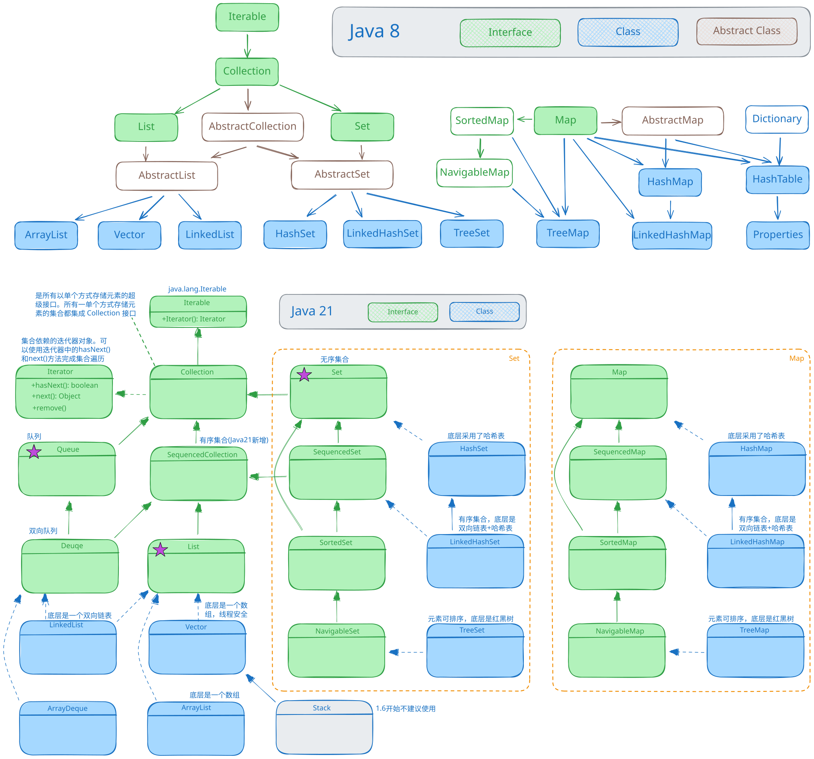
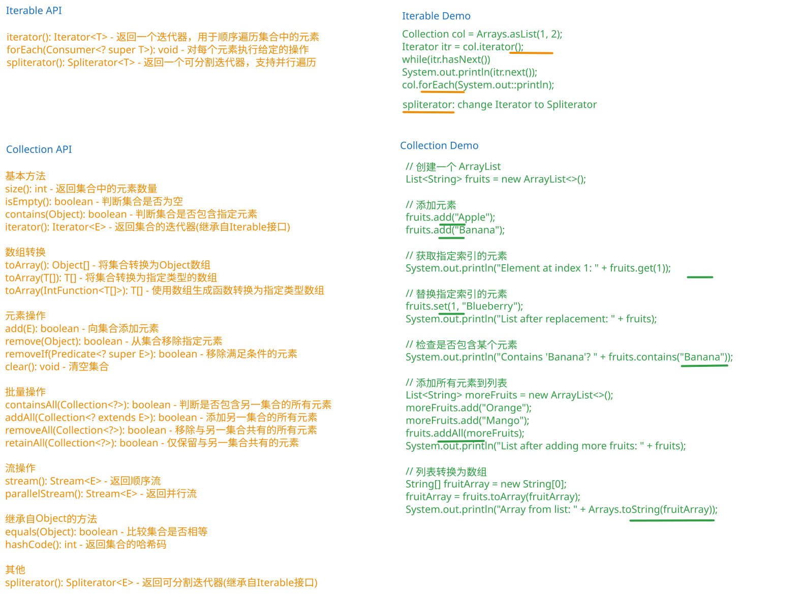
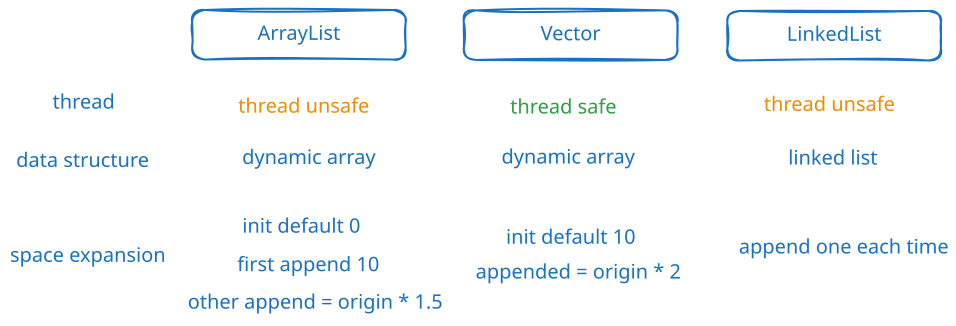
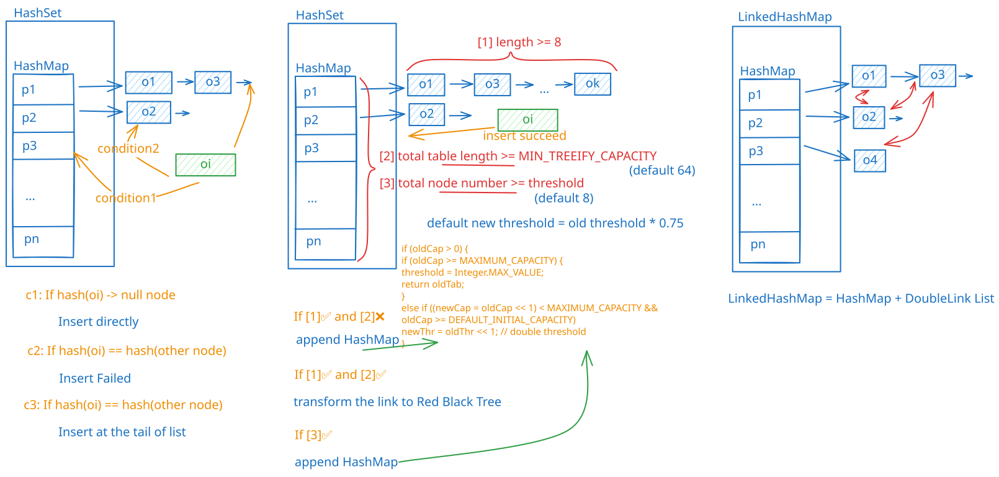
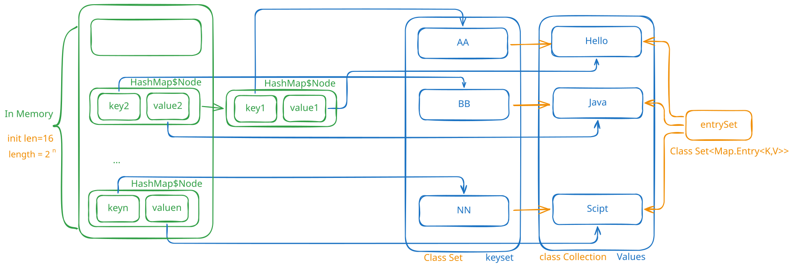
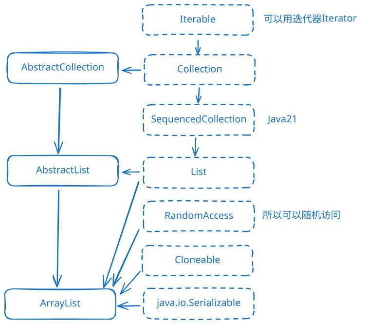

✏️：面试题/重要 🍭：简单/了解一下就行
"Iterable":{
"Collection（单列集合）":{
"List":["Vector", "ArrayList", "LinkedList"],
"Set":["HashSet", "LinkedHashSet", "TreeSet"],
}
},
"Map（双列集合）":{
"HashMap": ["LinkedHashMap"],
"HashTable": ["Perpeties"],
"TreeMap"
}
常用的Collection类关系图

Collection 和 Iterable 接口 API 案例

ArrayList，LinkedLisk，Vector 对比

HashSet 与 LinkedHashSet

Map

public interface Collection<E> extends Iterable<E>
graph LR
%% 颜色定义
classDef interface fill:#f0f7ff,stroke:#4a90e2,stroke-width:2px,color:#2c5282,stroke-dasharray:0
classDef abstractClass fill:#fdf2f8,stroke:#d53f8c,stroke-width:1.5px,color:#97266d,stroke-dasharray: 3 2
classDef concreteClass fill:#f0fff4,stroke:#38a169,stroke-width:2px,color:#276749,border-radius:5px
classDef label fill:#ffffff,stroke:#dee2e6,stroke-width:1px
%% 图例
subgraph "Java 8"
direction TB
LegendInterface["Interface"]:::interface
LegendClass["Class"]:::concreteClass
LegendAbstract["Abstract Class"]:::abstractClass
LegendInterface --> LegendClass
LegendClass --> LegendAbstract
linkStyle 0 stroke:none,stroke-width:0px
linkStyle 1 stroke:none,stroke-width:0px
end
%% 顶部接口
Iterable:::interface
Iterable --> Collection:::interface
%% Collection分支
Collection --> List:::interface
Collection --> AbstractCollection:::abstractClass
Collection --> Set:::interface
List --> AbstractList
AbstractCollection --> AbstractList:::interface
AbstractCollection --> AbstractSet:::interface
Set --> AbstractSet
%% AbstractList分支
AbstractList --> ArrayList:::concreteClass
AbstractList --> Vector:::concreteClass
AbstractList --> LinkedList:::concreteClass
%% AbstractSet分支
AbstractSet --> HashSet:::concreteClass
AbstractSet --> LinkedHashSet:::concreteClass
AbstractSet --> TreeSet:::concreteClass
%% Map分支
Map:::interface
Map --> AbstractMap:::abstractClass
Map --> SortedMap:::interface
Map --> Hashtable
Dictionary:::abstractClass
SortedMap --> NavigableMap:::interface
AbstractMap --> HashMap:::concreteClass
HashMap --> LinkedHashMap:::concreteClass
AbstractMap --> TreeMap
NavigableMap --> TreeMap:::concreteClass
Dictionary --> Hashtable:::concreteClass
Hashtable --> Properties:::concreteClass
classDef transparent fill:none,stroke:none,width:0,height:0
graph LR
%% 颜色定义
classDef interface fill:#f0f7ff,stroke:#4a90e2,stroke-width:2px,color:#2c5282,stroke-dasharray:0
classDef abstractClass fill:#fdf2f8,stroke:#d53f8c,stroke-width:1.5px,color:#97266d,stroke-dasharray: 3 2
classDef concreteClass fill:#f0fff4,stroke:#38a169,stroke-width:2px,color:#276749,border-radius:5px
%% 图例
%% subgraph "Java 8 Collection Structure"
%% direction TB
%% LegendInterface["Interface"]:::interface
%% LegendClass["Class"]:::concreteClass
%% LegendAbstract["Abstract Class"]:::abstractClass
%% LegendInterface --> LegendClass
%% LegendClass --> LegendAbstract
%% linkStyle 0 stroke:none,stroke-width:0px
%% linkStyle 1 stroke:none,stroke-width:0px
%%end
%% Root
%% Iterable %%:::interface
%% Iterable %% --> Collection:::interface
Collection:::interface
Collection --> AbstractCollection:::abstractClass
Collection --> List:::interface
Collection --> Queue:::interface
Collection --> Set:::interface
%% Queue区域框
subgraph "Queue Branch"
direction LR
%% Queue -- abstract and interface
Queue --> AbstractQueue:::abstractClass
Queue --> Deque:::interface
%% Queue -- concreteClass -- PriorityQueue
AbstractQueue --> PriorityQueue:::concreteClass
%% Queue -- concreteClass -- ArrayDeque
Deque --> ArrayDeque:::concreteClass
end
AbstractCollection --> AbstractQueue:::abstractClass
AbstractCollection --> ArrayDeque:::concreteClass
%% List区域框
subgraph "List Branch"
direction LR
%% List -- abstract and interface
AbstractList --> AbstractSequentialList:::abstractClass
List --> AbstractList:::abstractClass
%% List -- concreteClass -- ArrayList
AbstractList --> ArrayList:::concreteClass
%% List -- concreteClass -- LinkedList
AbstractSequentialList --> LinkedList:::concreteClass
Deque --> LinkedList:::concreteClass
%% List -- concreteClass -- Vector
AbstractList --> Vector:::concreteClass
%% List -- concreteClass -- Stack
Vector --> Stack:::concreteClass
end
AbstractCollection --> AbstractList:::abstractClass
%% Set区域框
subgraph "Set Branch"
direction LR
%% Set -- abstract and interface
Set --> SortedSet:::interface
SortedSet --> NavigableSet:::interface
Set --> AbstractSet:::abstractClass
AbstractSet --> EnumSet:::abstractClass
%% Set -- concreteClass -- HashSet
AbstractSet --> HashSet:::concreteClass
%% Set -- concreteClass -- LinkedHashSet
HashSet --> LinkedHashSet:::concreteClass
%% Set -- concreteClass -- TreeSet
AbstractSet -->TreeSet:::concreteClass
NavigableSet -->TreeSet:::concreteClass
end
AbstractCollection --> AbstractSet:::abstractClass
集合框架可以分为两条大的支线 1. 第一条支线 Collection，主要由 List、Set、Queue 组成： - List 代表有序、可重复的集合，典型代表就是封装了动态数组的 ArrayList 和封装了链表的 LinkedList； - Set 代表无序、不可重复的集合，典型代表就是 HashSet 和 TreeSet； - Queue 代表队列，典型代表就是双端队列 ArrayDeque，以及优先级队列 PriorityQueue。 2. 第二条支线 Map，代表键值对的集合，典型代表就是 HashMap，LinkedHashMap、TreeMap等。
集合框架位于 java.util 包下，提供了两个常用的工具类：
以实现子类ArrayList来演示. CollectionMethod.java 官网： https://docs.oracle.com/javase/8/docs/api/java/util/Collection.html
| 函数 | 功能 |
|---|---|
| boolean add(E e); | 添加单个元素 |
| int size(); | 获取集合中元素个数 |
| boolean addAll(Collection c); | 添加多个元素 |
| boolean contains(Object o); | 查找元素是否存在 |
| boolean containsAll(Collection c); | 查找多个元素是否都存在 |
| boolean remove(Object o); | 删除指定元素 |
| void clear(); | 清空 |
| boolean isEmpty(); | 判断是否为空 |
| boolean removeAll(Collection c); | 删除多个元素 |
| Object[] toArray(); | 将集合转换成一维数组 |
package ex_set;
import java.util.ArrayList;
import java.util.Collection;
public class Test {
public static void main(String[] args) {
Collection col = new ArrayList();
col.add("小龙女");
col.add(100); // 不同类型都可以
col.add(true);
col.add("小龙女");
col.add(new Integer(9));
System.out.println(col);
// [小龙女, 100, true, 小龙女, 9]
col.remove(0); //删除第一个
col.remove("小龙女");//删除指定元素
boolean contains = col.contains(10);
System.out.println("10是否存在: "+contains);
// 10是否存在: false
System.out.println(col.size()); // 4
System.out.println(col.isEmpty()); // false
col.clear();
Collection c = new ArrayList();
c.add("AA");
c.add("CC");
c.add("BBB");
col.addAll(c); // 添加一个集合
System.out.println(col);
// [AA, CC, BBB]
Collection c2 = new ArrayList();
c2.add("CC");
c2.add("AA~");
boolean containsAll = col.containsAll(c2);
col.removeAll(c2);
System.out.println(col);
// [AA, BBB]
}
}
contains调用底层调用的是equals
int n1 = 1000;
Integer n2 = 1000;
Collection c1 = new ArrayList();
c1.add(n2);
System.out.println(c1.contains(n1)); // true
System.out.println(c1.contains(n2)); // true
比如，要比较日期类，我们需要重写equal
package com.powernode.javase.collection;
import java.util.ArrayList;
import java.util.Collection;
public class Date {
private int year;
private int month;
private int day;
@Override
public boolean equals(Object obj){
if(obj == null) return false;
if(this == obj) return true;
if(obj instanceof Date){
Date date = (Date) obj;
return this.year == date.year && this.month == date.month && this.day == date.day;
}
return false;
}
public Date(int year, int month, int day) {
this.year = year;
this.month = month;
this.day = day;
}
public int getYear() {
return year;
}
public void setYear(int year) {
this.year = year;
}
public int getMonth() {
return month;
}
public void setMonth(int month) {
this.month = month;
}
public int getDay() {
return day;
}
public void setDay(int day) {
this.day = day;
}
public static void main(String[] args) {
Date d1 = new Date(2020, 10, 10);
Date d2 = new Date(2020, 10, 10);
Collection c = new ArrayList();
c.add(d1);
System.out.println(c.contains(d2)); // true
}
}
使用Iterator(迭代器)
Interface Iterator<E>
子接口：
ListIterator<E>, XMLEventReader
实现类：
BeanContextSupport.BCSIterator, EventReaderDelegate, Scanner
Collection col = new ArrayList();
col.add("Hello");
col.add("World");
Iterator iterator = col.iterator();
while (iterator.hasNext()){
System.out.println(iterator.next());
}
// Hello
// World
iterator = col.iterator();
while (iterator.hasNext()){
System.out.println(iterator.next());
}
// Hello
// World
下边使用增强 for 循环访问 Collection。底层仍然是迭代器，增强 for 循环可以理解成简化版本的迭代器遍历
for(Object o : col){
System.out.println(o);
}
练习：请编写程序 CollectionExercise.java
1. 创建 3 个 Dog{name, age} 对象，放入到 ArrayList 中，赋给 List 引用
2. 用迭代器和增强 for 循环两种方式来遍历
3. 重写 Dog 的 toString 方法，输出 name 和 age
package ex_set;
import java.util.ArrayList;
import java.util.Collection;
import java.util.Iterator;
public class Ex0 {
public static void main(String[] args) {
Collection col = new ArrayList();
col.add(new Dog("Tom", 10));
col.add(new Dog("Jerry", 8));
col.add(new Dog("旺财", 7));
for(Object o : col){
System.out.println(o);
}
//Tom 10
//Jerry 8
//旺财 7
// 第一步：获取当前集合依赖的迭代器对象
Iterator iterator = col.iterator();
// 第二步：编写循环，循环条件是：当前光标指向的位置是否存在元素。
while(iterator.hasNext()){
// 第三步：如果有，将光标指向的当前元素返回，并且将光标向下移动一位。
System.out.println(iterator.next());
}
//Tom 10
//Jerry 8
//旺财 7
}
}
class Dog{
private String name;
private int age;
public Dog(String name, int age) {
this.name = name;
this.age = age;
}
public String getName() {
return name;
}
public void setName(String name) {
this.name = name;
}
public int getAge() {
return age;
}
public void setAge(int age) {
this.age = age;
}
@Override
public String toString() {
return getName() + " " + getAge();
}
}
ConcurrentModificationException异常。modCount属性，用来记录修改次数，使用集合对象执行增，删，改中任意一个操作时，modCount就会自动加1。比如：protected transient int modCount = 0;expectedModCount属性。并且将expectedModCount初始化为modCount，即：int expectedModCount = modCount;modCount会加1。但是迭代器中的expectedModCount不会加1。而当迭代器对象的next()方法执行时，会检测expectedModCount和modCount是否相等，如果不相等，则抛出：ConcurrentModificationException异常。modCount会加1，并且expectedModCount也会加1。这样当迭代器对象的next()方法执行时，检测到的expectedModCount和modCount相等，则不会出现ConcurrentModificationException异常。// 创建集合对象
Collection<String> names = new ArrayList<>();
// 添加元素
names.add("zhangsan");
names.add("lisi");
names.add("wangwu");
names.add("zhaoliu");
names.add("zhoubapi");
// 迭代集合，删除集合中的某个元素
Iterator<String> it = names.iterator();
while (it.hasNext()) {
String name = it.next(); // java.util.ConcurrentModificationException 并发修改异常 modCount expectedModCount
if("lisi".equals(name)){
// 删除元素（使用集合带的remove方法删除元素）
//names.remove(name);
// 删除元素（使用迭代器的remove方法删除元素）
it.remove();
}
System.out.println(name);
}
List<E> Collection<E>, Iterable<E>
AbstractList, AbstractSequentialList, ArrayList, AttributeList, CopyOnWriteArrayList, LinkedList, RoleList, RoleUnresolvedList, Stack, Vector
List接口特有方法：（在Collection和SequencedCollection中没有的方法，只适合List家族使用的方法，这些方法都和下标有关系。）
* void add(int index, E element) 在指定索引处插入元素
* E set(int index, E element); 修改索引处的元素
* E get(int index); 根据索引获取元素（通过这个方法List集合具有自己特殊的遍历方式：根据下标遍历）
* E remove(int index); 删除索引处的元素
* int indexOf(Object o); 获取对象o在当前集合中第一次出现时的索引。
* int lastIndexOf(Object o); 获取对象o在当前集合中最后一次出现时的索引。
* List<E> subList(int fromIndex, int toIndex); 截取子List集合生成一个新集合（对原集合无影响）。[fromIndex, toIndex)
* static List<E> of(E... elements); 静态方法，返回包含任意数量元素的不可修改列表。（获取的集合是只读的，不可修改的。）
List list = new ArrayList();
list.add("tom");
list.add("jack");
list.add("mary");
list.add("smith2");
list.add("kristina");
System.out.println(list); (按照顺序)
//3的案例:
System.out.println(list.get(4)); //smith2 （支持索引）
System.out.println(list.indexOf("tom"));
list.remove(0); // 删掉第一个元素
list.set(0, "Hello"); // 替换 （只能替换存在的内容）
List接口课堂练习
ListExercise.java
添加10个以上的元素（比如String “hello”），在2号位插入一个元素“韩顺平教育”，获得第5个元素，删除第6个元素，修改第7个元素，在使用迭代器遍历集合，要求：使用List的实现类ArrayList完成。
package ex_set;
import java.util.ArrayList;
import java.util.Collection;
import java.util.Iterator;
import java.util.List;
public class ListExample {
public static void main(String[] args) {
List col = new ArrayList();
for(int i=0; i<10; i++){
col.add("Hello"+i);
}
// 获得第5个元素
System.out.println(col.get(4));
// 删除第6个元素
col.remove(6);
// 修改第7个元素
col.set(6, "World");
Iterator iterator = col.iterator();
while(iterator.hasNext()){
System.out.println(iterator.next());
}
}
}
package com.powernode.javase.collection;
import java.util.ArrayList;
import java.util.Iterator;
import java.util.List;
import java.util.ListIterator;
/**
* java.util.ListIterator：List接口专用的迭代器。Set集合不能使用。
* boolean hasNext(); 判断光标当前指向的位置是否存在元素。
* E next(); 将当前光标指向的元素返回，然后将光标向下移动一位。
* void remove(); 删除上一次next()方法返回的那个数据(删除的是集合中的)。remove()方法调用的前提是：你先调用next()方法。不然会报错。
*
* void add(E e); 添加元素（将元素添加到光标指向的位置，然后光标向下移动一位。）
* boolean hasPrevious(); 判断当前光标指向位置的上一个位置是否存在元素。
* E previous(); 获取上一个元素（将光标向上移动一位，然后将光标指向的元素返回）
* int nextIndex(); 获取光标指向的那个位置的下标
* int previousIndex(); 获取光标指向的那个位置的上一个位置的下标
* void set(E e); 修改的是上一次next()方法返回的那个数据（修改的是集合中的）。set()方法调用的前提是：你先调用了next()方法。不然会报错。
*/
public class ListIteratorTest {
public static void main(String[] args) {
// 创建集合List
List<String> names = new ArrayList<>();
// 添加元素
names.add("zhangsan");
names.add("lisi");
names.add("wangwu");
names.add("zhaoliu");
// 使用普通的通用迭代器遍历
/*Iterator<String> it = names.iterator();
while(it.hasNext()){
String name = it.next();
System.out.println(name);
}*/
// 使用ListIterator进行遍历
// 测试的add方法
/*ListIterator<String> li = names.listIterator();
while (li.hasNext()) {
String name = li.next();
if("lisi".equals(name)){
li.add("李四");
}
System.out.println(name);
}*/
// 测试hasPrevious()方法
// 判断是否有上一个
// 判断当前光标指向位置的上一个位置是否存在元素。
/*ListIterator<String> li = names.listIterator();
System.out.println("光标当前指向的位置的上一个位置是否有元素：" + li.hasPrevious());
while (li.hasNext()) {
String name = li.next();
System.out.println(name);
}
System.out.println("光标当前指向的位置的上一个位置是否有元素：" + li.hasPrevious());*/
// E previous(); 获取上一个元素（将光标向上移动一位，然后将光标指向的元素返回）
/*ListIterator<String> li = names.listIterator();
while (li.hasNext()) { String name = li.next(); System.out.println(name); }
System.out.println("========================");
System.out.println(li.previous()); // zhaoliu System.out.println(li.previous()); // wangwu
System.out.println(li.previous()); // lisi
System.out.println(li.previous()); // zhangsan
//System.out.println(li.previous()); // java.util.NoSuchElementException*/
//int nextIndex(); 获取光标指向的那个位置的下标
/*ListIterator<String> li = names.listIterator();
while (li.hasNext()) {
String name = li.next();
if("lisi".equals(name)){
// 当前取出的元素是"lisi"
System.out.println(li.nextIndex()); //2
// int previousIndex(); 获取光标指向的那个位置的上一个位置的下标
System.out.println(li.previousIndex()); // 1
}
System.out.println(name);
}
*/
// void set(E e);修改的是上一次next()方法返回的那个数据（修改的是集合中的）。set()方法调用的前提是：你先调用了next()方法。不然会报错。
ListIterator<String> li = names.listIterator();
// set方法不能随意使用，set调用的前提是：之前调用了next()或者previous()
// li.set("xxxxxxxxxxxxxx");
// java.lang.IllegalStateException
/*while (li.hasNext()) {
String name = li.next();
// 在这里时可以调用set方法
if("lisi".equals(name)) {
li.set("李四");
}
System.out.println(name);
}
System.out.println(names);*/
// remove方法：通过迭代器去删除
//li.remove();
// java.lang.IllegalStateException（调用迭代器的remove方法之前也是需要调用了next()/previous()方法。）
//删除上一次next()方法返回的那个数据(删除的是集合中的)。remove()方法调用的前提是：你先调用next()方法。不然会报错。
while (li.hasNext()) {
String name = li.next();
if("lisi".equals(name)){
// 删除
li.remove();
}
}
System.out.println(names);
}
}
回顾数组中的 Comparable
// User.java
package com.powernode.javase.collection.arraysort;
public class User implements Comparable<User>{
private String name;
private int age;
public User(String name, int age) {
this.name = name;
this.age = age;
}
public String getName() {
return name;
}
public void setName(String name) {
this.name = name;
}
public int getAge() {
return age;
}
public void setAge(int age) {
this.age = age;
}
@Override
public String toString() {
return "User{" +
"name='" + name + '\'' +
", age=" + age +
'}';
}
/*
关于compareTo方法的返回值：
a - b == 0 a == b
a - b > 0 a > b
a - b < 0 a < b
当compareTo方法执行结束之后，返回结果是0，表示：a == b
当compareTo方法执行结束之后，返回结果大于0，表示：a > b
当compareTo方法执行结束之后，返回结果小于0，表示：a < b
*/
@Override
public int compareTo(User user) { // 这个int是compareTo方法的返回值。相当于a - b之后的结果。
// 这里提供比较规则
// 可以按照名字进行排序，也可以按照年龄进行排序。
// return this.age - user.age; // this放前表示升序。
//return user.age - this.age; // this放后表示降序。
// 按照姓名排序
//return this.name.compareTo(user.name); // 升序
return user.name.compareTo(this.name); // 降序
}
}
package com.powernode.javase.collection.arraysort;
import java.util.Arrays;
public class ArraySort {
public static void main(String[] args) {
User u1 = new User("abc", 20);
User u2 = new User("bbc", 18);
User u3 = new User("abb", 19);
User u4 = new User("cbc", 25);
User u5 = new User("acb", 6);
User[] users = {u1, u2, u3, u4, u5};
// 排序
// class User cannot be cast to class Comparable
// Arrays数组工具类在对User类型的数组进行排序的时候出现了：java.lang.ClassCastException
// 因为User对象不是可比较的。User没有实现 java.lang.Comparable接口。
// 换句话说：User没有提供比较规则。程序无法进行比较。
// 怎么让User是可排序的。让User实现Comparable接口，实现compareTo方法，在该方法中编写比较规则。
Arrays.sort(users);
System.out.println(Arrays.toString(users));
}
}
[User{name='cbc', age=25}, User{name='bbc', age=18}, User{name='acb', age=6}, User{name='abc', age=20}, User{name='abb', age=19}]
这种的比较方法是侵入式的，对于 List 有更好的方法，在外部实现 Comparator
package com.powernode.javase.collection.listsort;
public class Person {
private String name;
private int age;
@Override
public String toString() {
return "Person{" +
"name='" + name + '\'' +
", age=" + age +
'}';
}
public Person(String name, int age) {
this.name = name;
this.age = age;
}
public String getName() {
return name;
}
public void setName(String name) {
this.name = name;
}
public int getAge() {
return age;
}
public void setAge(int age) {
this.age = age;
}
}
package com.powernode.javase.collection.listsort;
import java.util.Comparator;
/**
* 一个单独的比较器。在这个比较器中编写Person的比较规则。
*/
public class PersonComparator implements Comparator<Person> {
@Override
public int compare(Person o1, Person o2) {
// 按照年龄排序
// 按照名字排序
//return o1.getAge() - o2.getAge(); // 升序
//return o2.getAge() - o1.getAge(); // 降序
return o1.getName().compareTo(o2.getName());
//return o2.getName().compareTo(o1.getName());
}
}
package com.powernode.javase.collection.listsort;
import java.util.ArrayList;
import java.util.List;
public class ListSort {
public static void main(String[] args) {
// 创建Person对象
Person p1 = new Person("abc", 20);
Person p2 = new Person("bbc", 18);
Person p3 = new Person("abb", 19);
Person p4 = new Person("cbc", 25);
Person p5 = new Person("acb", 6);
// 创建List集合
List<Person> persons = new ArrayList<>();
persons.add(p1);
persons.add(p2);
persons.add(p3);
persons.add(p4);
persons.add(p5);
// 排序
persons.sort(new PersonComparator());
for (int i = 0; i < persons.size(); i++) {
System.out.println(persons.get(i));
}
}
}
可以使用匿名内部类简化
package com.powernode.javase.collection.listsort;
import java.util.ArrayList;
import java.util.Comparator;
import java.util.List;
/**
* 使用匿名内部类
*/
public class ListSort2 {
public static void main(String[] args) {
// 创建Person对象
Person p1 = new Person("abc", 20);
Person p2 = new Person("bbc", 18);
Person p3 = new Person("abb", 19);
Person p4 = new Person("cbc", 25);
Person p5 = new Person("acb", 6);
// 创建List集合
List<Person> persons = new ArrayList<>();
persons.add(p1);
persons.add(p2);
persons.add(p3);
persons.add(p4);
persons.add(p5);
// 排序
persons.sort(new Comparator<Person>() {
@Override
public int compare(Person o1, Person o2) {
return o1.getAge() - o2.getAge();
}
});
for (int i = 0; i < persons.size(); i++) {
System.out.println(persons.get(i));
}
}
}

public class ArrayListEx {
public static void main(String[] args) {
ArrayList array = new ArrayList();
array.add("1");
array.add("2");
array.add(null);
array.add(null);
System.out.println(array);
}
}
List<String> names = new ArrayList<>();
// 源码的 add 函数
// 可以看到没有 synchronized 标识符
private void add(E e, Object[] elementData, int s) {
if (s == elementData.length)
elementData = grow();
elementData[s] = e;
size = s + 1;
}
// 源码
// 默认是一个空数组
private static final Object[] DEFAULTCAPACITY_EMPTY_ELEMENTDATA = {};
// 无参构造器
public ArrayList() {
this.elementData = DEFAULTCAPACITY_EMPTY_ELEMENTDATA;
}
// 默认指定大小为 0 的情况，也初始化成空数组
private static final Object[] EMPTY_ELEMENTDATA = {};
// 有参构造器，指定初始大小
public ArrayList(int initialCapacity) {
if (initialCapacity > 0) {
this.elementData = new Object[initialCapacity];
} else if (initialCapacity == 0) {
this.elementData = EMPTY_ELEMENTDATA;
} else {
throw new IllegalArgumentException("Illegal Capacity: "+
initialCapacity);
}
}
EMPTY_ELEMENTDATA，DEFAULTCAPACITY_EMPTY_ELEMENTDATA要搞两个名字
这两个空数组常量虽然都是Object[]{}空数组，但具有完全不同的语义意义：new ArrayList(0))new ArrayList())// 下面演示 add 函数的调用过程(java8)
// 保存内容的 Object 数组，transient的意思是顺时的，为了不能序列化
transient Object[] elementData; // non-private to simplify nested class access
// 默认初始化数组是空
private static final Object[] DEFAULTCAPACITY_EMPTY_ELEMENTDATA = {};
// 默认容量大小为 10
private static final int DEFAULT_CAPACITY = 10;
// add 函数调用的 api，首先去[保证容量]，然后添加元素
public boolean add(E e) {
ensureCapacityInternal(size + 1); // Increments modCount!!
elementData[size++] = e;
return true;
}
// [保证容量]的方法，首先[计算需要的容量]，然后[确保这些容量足够]
private void ensureCapacityInternal(int minCapacity) {
ensureExplicitCapacity(calculateCapacity(elementData, minCapacity));
}
// [计算需要的容量]：如果元素是空，就代表这是第一次 add，那么就添加 10 个元素，否则返回调用传入的内容
private static int calculateCapacity(Object[] elementData, int minCapacity) {
if (elementData == DEFAULTCAPACITY_EMPTY_ELEMENTDATA) {
return Math.max(DEFAULT_CAPACITY, minCapacity);
}
return minCapacity;
}
// [确保这些容量足够]
// modCount用来保证不会有两个线程同时进来
// minCapacity > elementData.length 说明容量不够，才去真正的扩容
private void ensureExplicitCapacity(int minCapacity) {
modCount++;
// overflow-conscious code
if (minCapacity - elementData.length > 0)
grow(minCapacity);
}
// 真正的扩容
// 新的容量 = 老容量*1.5，他的 0.5 倍用的移位的操作实现的
// 新容量 = max(1.5老, 10)
// 先生成新的内容，然后把老内容 copy 到前边
private void grow(int minCapacity) {
// overflow-conscious code
int oldCapacity = elementData.length;
int newCapacity = oldCapacity + (oldCapacity >> 1);
if (newCapacity - minCapacity < 0)
newCapacity = minCapacity;
if (newCapacity - MAX_ARRAY_SIZE > 0)
newCapacity = hugeCapacity(minCapacity);
// minCapacity is usually close to size, so this is a win:
elementData = Arrays.copyOf(elementData, newCapacity);
}
//源码中的构造器
public ArrayList(int initialCapacity) {
if (initialCapacity > 0) {
this.elementData = new Object[initialCapacity];
} else if (initialCapacity == 0) {
this.elementData = EMPTY_ELEMENTDATA;
} else {
throw new IllegalArgumentException("Illegal Capacity: "+
initialCapacity);
}
}
// java8
public class Vector<E> extends AbstractList<E>
implements List<E>, RandomAccess, Cloneable, java.io.Serializable
{
protected Object[] elementData;
}
| 底层结构 | 版本 | 线程安全（同步）效率 | 扩容倍数 | |
|---|---|---|---|---|
| ArrayList | 可变数组 | jdk1.2 | 不安全，效率高 | 如果有参构造1.5倍 如果是无参 1. 第一次10 2. 从第二次开始按1.5扩 |
| Vector | 可变数组 | jdk1.0 | 安全，效率不高 | 如果是无参，默认10，满后，就按2倍扩容 如果指定大小，则每次直接按2倍扩 |
// 这里是构造器部分
public Vector() {
this(10);
}
public Vector(int initialCapacity) {
this(initialCapacity, 0);
}
public Vector(int initialCapacity, int capacityIncrement) {
super();
if (initialCapacity < 0)
throw new IllegalArgumentException("Illegal Capacity: "+
initialCapacity);
this.elementData = new Object[initialCapacity];
this.capacityIncrement = capacityIncrement;
}
public Vector(Collection<? extends E> c) {
Object[] a = c.toArray();
elementCount = a.length;
if (c.getClass() == ArrayList.class) {
elementData = a;
} else {
elementData = Arrays.copyOf(a, elementCount, Object[].class);
}
}
// 这里也是看一下 java8 里边的 add 部分的源码
protected int capacityIncrement; // 默认每次扩容多少，默认是 0
public synchronized boolean add(E e) {
modCount++;
ensureCapacityHelper(elementCount + 1);// 可以发现，其实和 ArrayList 差不多
elementData[elementCount++] = e;
return true;
}
private void ensureCapacityHelper(int minCapacity) {
// overflow-conscious code
if (minCapacity - elementData.length > 0)
grow(minCapacity);
}
private void grow(int minCapacity) {
// overflow-conscious code
int oldCapacity = elementData.length;
int newCapacity = oldCapacity + ((capacityIncrement > 0) ?
capacityIncrement : oldCapacity);
if (newCapacity - minCapacity < 0)
newCapacity = minCapacity;
if (newCapacity - MAX_ARRAY_SIZE > 0)
newCapacity = hugeCapacity(minCapacity);
elementData = Arrays.copyOf(elementData, newCapacity);
}
public class LinkedList<E>
extends AbstractSequentialList<E>
implements List<E>, Deque<E>, Cloneable, java.io.Serializable
{
transient int size = 0;
/**
* Pointer to first node.
* Invariant: (first == null && last == null) ||
* (first.prev == null && first.item != null)
*/
transient Node<E> first;
/**
* Pointer to last node.
* Invariant: (first == null && last == null) ||
* (last.next == null && last.item != null)
*/
transient Node<E> last;
public LinkedList() {
}
public boolean add(E e) {
linkLast(e);
return true;
}
void linkLast(E e) {
final Node<E> l = last;
final Node<E> newNode = new Node<>(l, e, null);
last = newNode;
if (l == null)
first = newNode;
else
l.next = newNode;
size++;
modCount++;
}
public E remove() {
return removeFirst();
}
public E removeFirst() {
final Node<E> f = first;
if (f == null)
throw new NoSuchElementException();
return unlinkFirst(f);
}
private E unlinkFirst(Node<E> f) {
// assert f == first && f != null;
final E element = f.item;
final Node<E> next = f.next;
f.item = null;
f.next = null; // help GC
first = next;
if (next == null)
last = null;
else
next.prev = null;
size--;
modCount++;
return element;
}
}
如果增删比较多，用 LinkedList 如果查改比较多，用 ArrayList
注意：ArrayList 和 LinkedList 都是线程不安全的
Vector 的方法，还扩展了其它方法，完成了栈结构的模拟。不过在JDK1.6（Java6）之后就不建议使用了，因为它是线程安全的，太慢了。E push(E item)：压栈E pop()：弹栈（将栈顶元素删除，并返回被删除的引用）int search(Object o)：查找栈中元素（返回值的意思是：以1为开始，从栈顶往下数第几个）E peek()：窥视栈顶元素（不会将栈顶元素删除，只是看看栈顶元素是什么。注意：如果栈为空时会报异常。）ArrayDequepackage com.powernode.javase.collection;
import java.util.ArrayDeque;
import java.util.LinkedList;
import java.util.Stack;
/**
* java.util.Stack：底层是数组，线程安全的，JDK1.6不建议用了。
* java.util.ArrayDeque：底层是数组（实现LIFO的同时，又实现了双端队列。）
* java.util.LinkedList：底层是双向链表（实现LIFO的同时，又实现了双端队列。）
* 以上三个类都实现了栈数据结构。都实现了LIFO。
*/
public class StackTest {
public static void main(String[] args) {
// 创建栈
Stack<String> stack1 = new Stack<>();
LinkedList<String> stack2 = new LinkedList<>();
ArrayDeque<String> stack3 = new ArrayDeque<>();
// 压栈
stack1.push("1");
stack1.push("2");
stack1.push("3");
stack1.push("4");
// seach方法
System.out.println("位置：" + stack1.search("1"));
// 弹栈
System.out.println(stack1.pop());
System.out.println(stack1.pop());
System.out.println(stack1.pop());
// 窥视
System.out.println("此时栈顶元素：" + stack1.peek());
//System.out.println(stack1.pop());
//java.util.EmptyStackException
//System.out.println(stack1.pop());
System.out.println("====================");
// 压栈
stack2.push("1");
stack2.push("2");
stack2.push("3");
stack2.push("4");
// 弹栈
System.out.println(stack2.pop());
System.out.println(stack2.pop());
System.out.println(stack2.pop());
System.out.println(stack2.pop());
System.out.println("====================");
// 压栈
stack3.push("1");
stack3.push("2");
stack3.push("3");
stack3.push("4");
// 弹栈
System.out.println(stack3.pop());
System.out.println(stack3.pop());
System.out.println(stack3.pop());
System.out.println(stack3.pop());
}
}
package com.powernode.javase.collection;
import java.util.ArrayDeque;
import java.util.Deque;
import java.util.LinkedList;
/**
* java.util.ArrayDeque
* java.util.LinkedList
* 以上两个类都实现了双端队列。
*/
public class DequeTest {
public static void main(String[] args) {
// 队尾进，队头出
// 创建双端队列对象
//Deque<String> deque1 = new ArrayDeque<>();
Deque<String> deque1 = new LinkedList<>();
deque1.offerLast("1");
deque1.offerLast("2");
deque1.offerLast("3");
deque1.offerLast("4");
System.out.println(deque1.pollFirst());
System.out.println(deque1.pollFirst());
System.out.println(deque1.pollFirst());
System.out.println(deque1.pollFirst());
// 队头进，队尾出
deque1.offerFirst("a");
deque1.offerFirst("b");
deque1.offerFirst("c");
deque1.offerFirst("d");
System.out.println(deque1.pollLast());
System.out.println(deque1.pollLast());
System.out.println(deque1.pollLast());
System.out.println(deque1.pollLast());
}
}
package ex_commom;
import java.util.HashSet;
public class SetEx {
public static void main(String[] args) {
HashSet h = new HashSet();
h.add(1);
h.add("Jack");
h.add(2);
h.add("Jack");
h.add(null);
h.add(null);
System.out.println(h); // [null, 1, 2, Jack]
System.out.println(h); // [null, 1, 2, Jack]
System.out.println(h); // [null, 1, 2, Jack]
Iterator it = h.iterator();
while (it.hasNext()) {
System.out.println(it.next());
}
for(Object o: h){
System.out.println(o);
}
}
}
| 名称 | 本质 | 顺序 | 重复 | 底层 |
|---|---|---|---|---|
| HashSet | HashMap | 无序 | 不可重复 | 哈希表 |
| LinkedHashSet | LinkedHashMap | 有序（插入顺序） | 不可重复 | 哈希表+双向链表 |
| TreeSet | TreeMap | 有序（大小顺序） | 不可重复 | 红黑树 |
public class HashSet<E>
extends AbstractSet<E>
implements Set<E>, Cloneable, java.io.Serializable {
private transient HashMap<E,Object> map;
}
package ex_commom;
import java.util.HashSet;
class Dog{
String name;
public Dog(String name) {
this.name = name;
}
}
public class SetEx {
public static void main(String[] args) {
HashSet h = new HashSet();
System.out.println(h.add("Jack")); // t
System.out.println(h.add("Jack")); // f
System.out.println(h.add(new String("Jack"))); // f --》经典问题
System.out.println(h.add(new String("Jack"))); // f --》经典问题
System.out.println(h.add(new Dog("Jack"))); // t
System.out.println(h.add(new Dog("Jack")));// t
}
}
HashSet 底层是 HashMaphash 值 -> 索引值table，看这个索引位置是否已经存放的有元素equals 比较，如果相同，就放弃添加，如果不相同，则添加到最后TREEIFY_THRESHOLD (默认是 8)，并且 table 的大小 >= MIN_TREEIFY_CAPACITY (默认 64)，就会进行树化（红黑树）// HashSet.java
public boolean add(E e) {
return map.put(e, PRESENT)==null;
// 如果添加成功会 map.put 返回 null，如果不是 null 就是 add 失败了
}
// HashMap.java
static final float DEFAULT_LOAD_FACTOR = 0.75f;// 缩放因子默认值是 0.75
static final int TREEIFY_THRESHOLD = 8; // 默认大小是 8
static final int MIN_TREEIFY_CAPACITY = 64;// 链表变红黑树需要满足数组长度大于 64
static final int DEFAULT_INITIAL_CAPACITY = 1 << 4; // aka 16
public HashMap() {
this.loadFactor = DEFAULT_LOAD_FACTOR; // all other fields defaulted
}
public V put(K key, V value) {
return putVal(hash(key), key, value, false, true);
}
static final int hash(Object key) {
int h;
return (key == null) ? 0 : (h = key.hashCode()) ^ (h >>> 16);
} // 所以这个 hash 并不是 hashCode 本身，它还要右移 16 位
final void treeifyBin(Node<K,V>[] tab, int hash) {
int n, index; Node<K,V> e;
// 并不是直接变成红黑树，而是先尝试数组扩容
if (tab == null || (n = tab.length) < MIN_TREEIFY_CAPACITY)
resize();
else if ((e = tab[index = (n - 1) & hash]) != null) {
TreeNode<K,V> hd = null, tl = null;
do {
TreeNode<K,V> p = replacementTreeNode(e, null);
if (tl == null)
hd = p;
else {
p.prev = tl;
tl.next = p;
} tl = p;
} while ((e = e.next) != null);
if ((tab[index] = hd) != null)
hd.treeify(tab);
}
}
/**
* Implements Map.put and related methods.
*
* @param hash hash for key
* @param key the key
* @param value the value to put
* @param onlyIfAbsent if true, don't change existing value
* @param evict if false, the table is in creation mode.
* @return previous value, or null if none
*/
final V putVal(int hash, K key, V value, boolean onlyIfAbsent,
boolean evict) {
Node<K,V>[] tab; Node<K,V> p; int n, i;
if ((tab = table) == null || (n = tab.length) == 0)
n = (tab = resize()).length;
if ((p = tab[i = (n - 1) & hash]) == null)
// 得到了 hash 对应的索引的元素的地址，赋值给p，判断是否存在对象
// 不存在就直接放新节点
tab[i] = newNode(hash, key, value, null);
else {
// 存在的话：[1][2][3]
Node<K,V> e; K k;
// [1] 对象本身相等 或者 对象通过.equal判断相等，则判定相同
if (p.hash == hash &&
((k = p.key) == key || (key != null && key.equals(k))))
e = p;
// [2] 找到的对象已经是红黑树了，就调用红黑树的 insert 算法
else if (p instanceof TreeNode)
e = ((TreeNode<K,V>)p).putTreeVal(this, tab, hash, key, value);
// [3] 找到的对象还不是红黑树，通过了[1]说明对象后边还有链表，逐一判断
else {
for (int binCount = 0; ; ++binCount) {
if ((e = p.next) == null) {
p.next = newNode(hash, key, value, null);
if (binCount >= TREEIFY_THRESHOLD - 1) // -1 for 1st
treeifyBin(tab, hash); // 尝试转换成红黑树
break;
}
if (e.hash == hash &&
((k = e.key) == key || (key != null && key.equals(k))))
break;
p = e;
}
}
if (e != null) { // existing mapping for key
V oldValue = e.value;
if (!onlyIfAbsent || oldValue == null)
e.value = value;
afterNodeAccess(e);
return oldValue;
}
}
++modCount;
if (++size > threshold) // 注意 threshold 第一次=8+8*0.75=12，并不是 table 被占用了 12 个，也不是某一条链表长 12，而是一共有 12 个节点就会触发！
resize();
afterNodeInsertion(evict); // 为了给其他继承了 HashMap 的类一些扩展操作
return null;
}
final Node<K,V>[] resize() {
Node<K,V>[] oldTab = table;
int oldCap = (oldTab == null) ? 0 : oldTab.length;
int oldThr = threshold;
int newCap, newThr = 0;
if (oldCap > 0) {
if (oldCap >= MAXIMUM_CAPACITY) {
threshold = Integer.MAX_VALUE;
return oldTab;
}
else if ((newCap = oldCap << 1) < MAXIMUM_CAPACITY &&
oldCap >= DEFAULT_INITIAL_CAPACITY)
newThr = oldThr << 1; // double threshold
}
else if (oldThr > 0) // initial capacity was placed in threshold
newCap = oldThr;
else { // zero initial threshold signifies using defaults
newCap = DEFAULT_INITIAL_CAPACITY;
newThr = (int)(DEFAULT_LOAD_FACTOR * DEFAULT_INITIAL_CAPACITY);
}
// ....
}
1. `HashSet` 底层是 `HashMap`，第一次添加时，`table` 数组扩容到 16，临界值 (threshold) 是 16*加载因子 (loadFactor) = 12*（例如，加载因子为 0.75 时，临界值为 12。）
2. 如果 `table` 数组使用到了临界值 12，就会扩容到 16 * 2 = 32，新的临界值就是 32*0.75 = 24，依次类推。
3. 在 Java 8 中，如果一条链表的元素个数到达 `TREEIFY_THRESHOLD` (默认是 8)，并且 `table` 的大小 >= `MIN_TREEIFY_CAPACITY` (默认 64)，就会进行树化（红黑树），否则仍然采用数组扩容机制。
package ex_commom;
import java.util.HashSet;
import java.util.Objects;
public class HashSetEx01 {
public static void main(String[] args) {
HashSet set = new HashSet();
set.add(new Employee("Jack", 40));
set.add(new Employee("Bob", 30));
set.add(new Employee("Jack", 40));
System.out.println(set);
System.out.println(new Employee("Jack", 40).equals(new Employee("Jack", 40)));
}
}
class Employee{
String name;
int age;
public Employee(String name, int age) {
this.name = name;
this.age = age;
}
@Override
public boolean equals(Object o) {
if (this == o) return true;
if (o == null || getClass() != o.getClass()) return false;
Employee employee = (Employee) o;
if (age != employee.age) return false;
return Objects.equals(name, employee.name);
}
@Override
public int hashCode() {
return Objects.hash(name, age);
}
}
package ex_commom;
import java.util.HashSet;
import java.util.Objects;
public class HashSetEx02 {
public static void main(String[] args){
HashSet set = new HashSet();
set.add(new Employee("Jack", new MyDate(2020,12,31)));
set.add(new Employee("Bob", new MyDate(2021,11,11)));
set.add(new Employee("Jack", new MyDate(2020,12,31)));
System.out.println(set);
}}
class Employee{
String name;
MyDate birthday;
public Employee(String name, MyDate birthday) {
this.name = name;
this.birthday = birthday;
}
@Override
public boolean equals(Object o) {
if (o == null || getClass() != o.getClass()) return false;
Employee employee = (Employee) o;
return Objects.equals(name, employee.name) && Objects.equals(birthday, employee.birthday);
}
@Override
public int hashCode() {
return Objects.hash(name, birthday);
}
}
class MyDate{
private int year;
private int month;
private int day;
public MyDate(int year, int month, int day) {
this.year = year;
this.month = month;
this.day = day;
}
public int getYear() {
return year;
}
public int getMonth() {
return month;
}
public int getDay() {
return day;
}
@Override
public String toString() {
return year + "-" + month + "-" + day;
}
@Override
public boolean equals(Object o) {
if (o == null || getClass() != o.getClass()) return false;
MyDate myDate = (MyDate) o;
return year == myDate.getYear() && month == myDate.getMonth() && day == myDate.getDay();
}
@Override
public int hashCode() {
return Objects.hash(year, month, day);
}
}
1) 源码：LinkedHashSet是HashSet子类
public class LinkedHashSet<E>
extends HashSet<E>
implements Set<E>, Cloneable, java.io.Serializable {}
2) LinkedHashSet 底层是一个 LinkedHashMap，底层维护了一个数组 + 双向链表
// HashSet.java
/**
* Constructs a new, empty linked hash set. (This package private
* constructor is only used by LinkedHashSet.) The backing
* HashMap instance is a LinkedHashMap with the specified initial
* capacity and the specified load factor.
*
* @param initialCapacity the initial capacity of the hash map
* @param loadFactor the load factor of the hash map
* @param dummy ignored (distinguishes this
* constructor from other int, float constructor.)
* @throws IllegalArgumentException if the initial capacity is less
* than zero, or if the load factor is nonpositive
*/
HashSet(int initialCapacity, float loadFactor, boolean dummy) {
map = new LinkedHashMap<>(initialCapacity, loadFactor);
}
3) LinkedHashMap 根据元素的 hashCode 值来决定元素的存储位置，同时使用链表维护元素的次序（图），这使得元素看起来是以插入顺序保存的。
4) LinkedHashMap 不允许添重复元素
当我们使用无参构造器创建treeset 时，仍然是无序的。如果想有序，那就需要自己传入Comparator。如果 return 0，那就说明两者相等，只能添加一个。
package ex_commom;
import java.util.Comparator;
import java.util.Hashtable;
import java.util.Properties;
import java.util.TreeSet;
public class hashtableEx {
public static void main(String[] args) {
TreeSet set = new TreeSet();
set.add("A");
set.add("a");
set.add("B");
set.add("b");
System.out.println(set); // [A, B, a, b]
TreeSet set2 = new TreeSet(new Comparator() {
public int compare(Object o1, Object o2) {
return o1.toString().compareTo(o2.toString());
} }); set2.add("D");
set2.add("C");
set2.add("A");
set2.add("B");
System.out.println(set2); // [A, B, C, D]
TreeSet set3 = new TreeSet(new Comparator() {
public int compare(Object o1, Object o2) {
return o1.toString().length()==o2.toString().length() ? 0 : -1; // 0这样就加不进去
return o1.toString().length()==o2.toString().length() ? 1 : -1; // 1这样就加得进去
}
}); set3.add("D");
set3.add("C");
System.out.println(set3);
}
}
| 方法 | 说明 |
|---|---|
V put(K key, V value); |
添加键值对 |
void putAll(Map<? extends K,? extends V> m); |
添加多个键值对 |
V get(Object key); |
通过key获取value |
boolean containsKey(Object key); |
是否包含某个key |
boolean containsValue(Object value); |
是否包含某个value |
V remove(Object key); |
通过key删除key-value |
void clear(); |
清空Map |
int size(); |
键值对个数 |
boolean isEmpty(); |
判断是否为空Map |
Collection<V> values(); |
获取所有的value |
Set<K> keySet(); |
获取所有的key |
Set<Map.Entry<K,V>> entrySet(); |
获取所有键值对的Set视图 |
static <K,V> Map<K,V> of(K k1, V v1, K k2, V v2, K k3, V v3); |
静态方法，使用现有的key-value构造Map |
package com.powernode.javase.collection;
import java.util.Collection;
import java.util.HashMap;
import java.util.Map;
/**
* Map接口中常用的方法：
* V put(K key, V value); 添加键值对
* void putAll(Map<? extends K,? extends V> m); 添加多个键值对
* V get(Object key); 通过key获取value
* void clear(); 清空Map
* boolean containsKey(Object key); 是否包含某个key
* boolean containsValue(Object value); 是否包含某个value
* int size(); 键值对个数
* boolean isEmpty(); 判断是否为空Map
* V remove(Object key); 通过key删除key-value
* Collection<V> values(); 获取所有的value
* Set<K> keySet(); 获取所有的key
* Set<Map.Entry<K,V>> entrySet(); 获取所有键值对的Set视图。
*
* static <K,V> Map<K,V> of(K k1, V v1, K k2, V v2, K k3, V v3); 静态方法，使用现有的key-value构造Map
*/public class MapTest01 {
public static void main(String[] args) {
// 创建一个Map集合
Map<Integer,String> maps = new HashMap<>();
// 添加键值对
maps.put(120, "张三");
maps.put(110, "李四");
maps.put(119, "王五");
System.out.println("键值对个数：" + maps.size());
// 根据key获取value
String name = maps.get(110);
System.out.println(name);
// key对应的value不存在的时候返回null
System.out.println(maps.get(11111)); // null
// 清空map集合
//maps.clear();
// 获取键值对个数
//System.out.println("个数：" + maps.size());
// 判断集合中是否包含某个key(底层会调用equals方法)
System.out.println(maps.containsKey(1100));
// 判断集合中是否包含某个value(底层会调用equals方法)
System.out.println(maps.containsValue("李四2"));
// 判断集合是否为空（判断键值对的个数是否为0）
System.out.println(maps.isEmpty()); // false
// 再创建一个Map集合
Map<Integer, String> newMaps = new HashMap<>();
newMaps.put(111, "赵六");
newMaps.putAll(maps);
System.out.println("键值对个数：" + newMaps.size());
// 通过key删除整个key-value对儿。
newMaps.remove(111);
System.out.println(newMaps.size());
// 获取所有的value
Collection<String> values = maps.values();
// for-each迭代集合。
for(String value : values){
System.out.println(value);
}
// 静态方法of
Map<Integer, String> userMap = Map.of(1, "zhangsan", 2, "lisi", 3, "wangwu", 4, "zhaoliu");
System.out.println(userMap.size());
}
}
Map.EntrySet 是 Map 的内部类。在调用 entrySet 的时候会把每一个 Key 和 Value 放在一个Map.EntrySrt里边，组合起来成为一个元素，然后每一个元素放在Set里边返回回来。
// Map.java
public interface Map<K, V> {
//...
// Views
Set<K> keySet();
Collection<V> values();
Set<Map.Entry<K, V>> entrySet();
interface Entry<K, V> {
K getKey();
V getValue();
V setValue(V value);
boolean equals(Object o);
int hashCode();
public static <K extends Comparable<? super K>, V> Comparator<Map.Entry<K, V>> comparingByKey() {
return (Comparator<Map.Entry<K, V>> & Serializable)
(c1, c2) -> c1.getKey().compareTo(c2.getKey());
}
public static <K, V extends Comparable<? super V>> Comparator<Map.Entry<K, V>> comparingByValue() {
return (Comparator<Map.Entry<K, V>> & Serializable)
(c1, c2) -> c1.getValue().compareTo(c2.getValue());
}
public static <K, V> Comparator<Map.Entry<K, V>> comparingByKey(Comparator<? super K> cmp) {
Objects.requireNonNull(cmp);
return (Comparator<Map.Entry<K, V>> & Serializable)
(c1, c2) -> cmp.compare(c1.getKey(), c2.getKey());
}
public static <K, V> Comparator<Map.Entry<K, V>> comparingByValue(Comparator<? super V> cmp) {
Objects.requireNonNull(cmp);
return (Comparator<Map.Entry<K, V>> & Serializable)
(c1, c2) -> cmp.compare(c1.getValue(), c2.getValue());
}
@SuppressWarnings("unchecked")
public static <K, V> Map.Entry<K, V> copyOf(Map.Entry<? extends K, ? extends V> e) {
Objects.requireNonNull(e);
if (e instanceof KeyValueHolder) {
return (Map.Entry<K, V>) e;
} else {
return Map.entry(e.getKey(), e.getValue());
}
}
}
//...
}
Map.EntryHashSet：static class Node<K,V> implements Map.Entry<K,V>LinkedHashMap：static class Entry<K,V> extends HashMap.Node<K,V>TreeMap：static final class Entry<K,V> implements Map.Entry<K,V>HashMap.Node 的链表结构，TreeMap.Entry 额外维护了红黑树所需的指针（left/right/parent）和颜色标记HashMap$Node对象中下面是 HashMap.Node 实现了 Map.Entry：
/**
* Basic hash bin node, used for most entries. (See below for * TreeNode subclass, and in LinkedHashMap for its Entry subclass.) */
static class Node<K,V> implements Map.Entry<K,V> {
final int hash;
final K key;
V value;
Node<K,V> next;
Node(int hash, K key, V value, Node<K,V> next) {
this.hash = hash;
this.key = key;
this.value = value;
this.next = next;
}
public final K getKey() { return key; }
public final V getValue() { return value; }
public final String toString() { return key + "=" + value; }
public final int hashCode() {
return Objects.hashCode(key) ^ Objects.hashCode(value);
}
public final V setValue(V newValue) {
V oldValue = value;
value = newValue;
return oldValue;
}
public final boolean equals(Object o) {
if (o == this)
return true;
if (o instanceof Map.Entry) {
Map.Entry<?,?> e = (Map.Entry<?,?>)o;
if (Objects.equals(key, e.getKey()) &&
Objects.equals(value, e.getValue()))
return true;
} return false;
}
}
package ex_commom;
import java.util.HashMap;
import java.util.Iterator;
import java.util.Map;
public class HashSetEx {
public static void main(String[] args) {
Map map = new HashMap();
map.put(1,new People("Jack",10000));
map.put(2,new People("Tom",20000));
map.put(3,new People("Lucy",30000));
// 1
Iterator iterator = map.keySet().iterator();
while(iterator.hasNext()){
int key = (Integer)iterator.next();
People p = (People)map.get(key);
if(p.getSalary()>18000)
System.out.println("Key: "+key+" Value: "+map.get(key));
}
// 2
Iterator iterator2 = map.entrySet().iterator();
while(iterator2.hasNext()){
Map.Entry entry = (Map.Entry)iterator2.next();
People p = (People)entry.getValue();
if(p.getSalary()>18000)
System.out.println("Key: "+entry.getKey()+" Value: "+entry.getValue());
}
}
}
class People{
private String name;
private int salary;
public People(String name, int salary){
this.name = name;
this.salary = salary;
} public String getName() {
return name;
} public int getSalary() {
return salary;
}
}
//使用HashMap添加3个员工对象，要求
//键：员工id
//值：员工对象
//并遍历显示工资>18000的员工(遍历方式最少两种)
//员工类：姓名、工资、员工id
package com.powernode.javase.collection;
import java.util.*;
public class MyTest {
public static void main(String[] args) {
Map<Integer,String> map = new HashMap<>();
map.put(1,"张三");
map.put(2,"李四");
map.put(3,"王五");
map.put(4,"赵六");
/*
* 方法一: keySet
*/
Set<Integer> keys = map.keySet();
for(Integer key : keys){
System.out.println(key + "=" + map.get(key));
}
//1=张三
//2=李四
//3=王五
//4=赵六
Iterator<Integer> it = keys.iterator();
while (it.hasNext()) {
Integer key = it.next();
System.out.println(key + "=" + map.get(key));
}
//1=张三
//2=李四
//3=王五
//4=赵六
/*
* 方法二: values
*/
Collection<String> values = map.values();
for(String value : values){
System.out.println(value);
}
//张三
//李四
//王五
//赵六
/*
* 方法三: entrySet
*/
Set<Map.Entry<Integer,String>> entries = map.entrySet();
for(Map.Entry<Integer,String> entry : entries){
System.out.println(entry.getKey() + "=" + entry.getValue());
}
//1=张三
//2=李四
//3=王五
//4=赵六
}
}
package com.powernode.javase.collection.hashmap;
import java.util.HashMap;
import java.util.Map;
import java.util.Set;
/**
* HashMap集合特点：key是无序不可重复
* 1. key无序：存进去的顺序和取出的顺序不一定相同。
* 2. 不可重复：具有唯一性。（注意：如果key重复的话，value就会覆盖。）
*
* 重要原理：
* 如果equals方法返回的结果是true。那么hashCode()方法返回的结果就必须相同。这样才能保证key是不重复的。
*
* 最终结论：
* 存放在HashMap集合key部分的元素，以及存储在HashSet集合中的元素，都需要同时重写hashCode+equals
*/
public class HashMapTest01 {
public static void test01(){
// 创建HashMap集合（以下代码中key是JDK内置的类）
Map<String, String> map = new HashMap<>();
// 向HashMap集合中put：key+value
map.put("11111111111112", "张三");
map.put("11111111111113", "李四");
map.put("11111111111114", "王五");
map.put("11111111111115", "赵六");
map.put("22222222222225", "钱七1");
map.put("22222222222225", "钱七2");
map.put("22222222222225", "钱七3");
map.put("22222222222225", "钱七4");
// 遍历
Set<Map.Entry<String, String>> entries = map.entrySet();
for(Map.Entry<String, String> entry : entries){
String idCard = entry.getKey();
String name = entry.getValue();
System.out.println(idCard + "=" + name);
}
//11111111111112=张三
//11111111111113=李四
//11111111111114=王五
//22222222222225=钱七4
//11111111111115=赵六
}
public static void test02(){
// Map集合的key部分存储的是自定义的类型
Map<User, Integer> map = new HashMap<>();
// 准备User对象
User user1 = new User("zhangsan", 20);
User user2 = new User("lisi", 22);
User user3 = new User("wangwu", 21);
User user4 = new User("zhaoliu", 19);
User user5 = new User("zhaoliu", 19);
System.out.println(user4.equals(user5)); // true
System.out.println(user4.hashCode()); // 793589513
System.out.println(user5.hashCode()); // 1313922862
System.out.println(user4.hashCode() % 16); // 9
System.out.println(user5.hashCode() % 16); // 14
// 向Map集合中put：key+value
map.put(user1, 110);
map.put(user2, 111);
map.put(user3, 112);
map.put(user4, 113);
map.put(user5, 114);
// 遍历
Set<User> users = map.keySet();
for(User user : users){
Integer value = map.get(user);
System.out.println(user + "====>" + value);
}
//true
//-1431540200
//-1431540200
//-8
//-8
//User{name='zhaoliu', age=19}====>114
//User{name='lisi', age=22}====>111
//User{name='zhangsan', age=20}====>110
//User{name='wangwu', age=21}====>112
}
public static void main(String[] args) {
test01();
test02();
}
}
package com.powernode.javase.collection.hashmap;
import java.util.Objects;
public class User {
private String name;
private int age;
//重写 equals 方法，上边的 HashMap 插入就会判断 user4 和 user5 是同一个人了
@Override
public boolean equals(Object o) {
if (this == o) return true;
if (o == null || getClass() != o.getClass()) return false;
User user = (User) o;
return age == user.age && Objects.equals(name, user.name);
// "zhangsan" 20
// "zhangsan" 20
// equals ==> true
}
// 还要重写 hashCode!!!
@Override
public int hashCode() {
return Objects.hash(name, age);
//return name.hashCode() + this.age;
}
@Override
public String toString() {
return "User{" +
"name='" + name + '\'' +
", age=" + age +
'}';
}
public User(String name, int age) {
this.name = name;
this.age = age;
}
public String getName() {
return name;
}
public void setName(String name) {
this.name = name;
}
public int getAge() {
return age;
}
public void setAge(int age) {
this.age = age;
}
}
PS，可以用 IDEA 的快捷方式快速生成 equals和hashCode方法。
注意！自己写的类，放到 HashMap里边 当做 Key一定要重写equals 和 hashCode！！！
通过调⽤ hashCode ⽅法获取键的哈希码，并将其与右移 16 位的哈希码进⾏异或运算。
static final int hash(Object key) {
int h;
return (key == null) ? 0 : (h = key.hashCode()) ^ (h >>> 16);
}
key 可以是 null，但是 null 只能有一个，默认存在哈希表下标为 0 的位置
package com.powernode.javase.collection.hashmap;
import java.util.HashMap;
import java.util.Map;
import java.util.Set;
/**
* HashMap集合的key可以是null吗？
* 可以key是null，但肯定是只能有一个。
*/
public class HashMapTest02 {
public static void main(String[] args) {
Map<String, String> map = new HashMap<>();
map.put(null, "zhangsan");
map.put(null, "lisi");
map.put(null, "wangwu");
map.put(null, "zhaoliu");
System.out.println(map.size()); //1
Set<Map.Entry<String, String>> entries = map.entrySet();
for(Map.Entry<String, String> entry : entries){
System.out.println(entry.getKey() + "=" + entry.getValue());
}
//null=zhaoliu
}
}
package com.powernode.javase.collection.hashmap;
/**
* 手写HashMap集合的put方法和get方法。
*/
public class MyHashMap<K,V> {
/**
* 哈希表
*/
private Node<K,V>[] table;
/**
* 键值对的个数
*/
private int size;
@SuppressWarnings("unchecked")
public MyHashMap() {
// 注意：new数组的时候，不能使用泛型。这样写是错误的：new Node<K,V>[16];
this.table = new Node[16];
}
static class Node<K,V>{
/**
* key的hashCode()方法的返回值。
* 哈希值,哈希码
*/
int hash;
/**
* key
*/
K key;
/**
* value
*/
V value;
/**
* 下一个结点的内存地址
*/
Node<K,V> next;
/**
* 构造一个结点对象
* @param hash 哈希值
* @param key 键
* @param value 值
* @param next 下一个结点地址
*/
public Node(int hash, K key, V value, Node<K, V> next) {
this.hash = hash;
this.key = key;
this.value = value;
this.next = next;
}
@Override
public String toString(){
return "["+key+", "+value+"]";
}
}
/**
* 获取集合中的键值对的个数
* @return 个数
*/
public int size(){
return size;
}
/**
* 向MyHashMap集合中添加一个键值对。
* @param key 键
* @param value 值
* @return value，如果key重复，则返回oldValue，如果key不重复，则返回newValue
*/ public V put(K key, V value){
/*
【第一步】：处理key为null的情况
如果添加键值对的key就是null，则将该键值对存储到table数组索引为0的位置。
【第二步】：获得key对象的哈希值
如果添加键值对的key不是null，则就调用key的hashcode()方法，获得key的哈希值。
【第三步】：获得键值对的存储位置
因为获得的哈希值在数组合法索引范围之外，
因此我们就需要将获得的哈希值转化为[0，数组长度-1]范围的整数，
那么可以通过取模法来实现，也就是通过“哈希值 % 数组长度”来获得索引位置（i）。
【第四步】：将键值对添加到table数组中
当table[i]返回结果为null时，则键键值对封装为Node对象并存入到table[i]的位置。
当table[i]返回结果不为null时，则意味着table[i]存储的是单链表。
我们首先遍历单链表，如果遍历出来节点的
key和添加键值对的key相同，那么就执行覆盖操作；
如果遍历出来节点的key和添加键值对的key都不同，则就将键键
值对封装为Node对象并插入到单链表末尾。
*/
if(key == null){
return putForNullKey(value);
}
// 程序执行到此处说明key不是null
// 获取哈希值
int hash = key.hashCode();
// 将哈希值转换成数组的下标
int index = Math.abs(hash % table.length);
// 取出下标index位置的Node
Node<K,V> node = table[index];
if(null == node){
table[index] = new Node<>(hash, key, value, null);
size++;
return value;
}
// 有单向链表（遍历单向链表，尾插法）
Node<K,V> prev = null;
while(null != node){
if(node.key.equals(key)){
V oldValue = node.value;
node.value = value;
return oldValue;
}
prev = node;
node = node.next;
}
prev.next = new Node<>(hash, key, value, null);
size++;
return value;
}
private V putForNullKey(V value) {
Node<K,V> node = table[0];
if(node == null){
table[0] = new Node<>(0, null,value,null);
size++;
return value;
}
// 程序可以执行到此处，说明下标为0的位置上有单向链表
Node<K, V> prev = null;
while(node != null){
if(node.key == null){
V oldValue = node.value;
node.value = value;
return oldValue;
}
prev = node;
node = node.next;
}
prev.next = new Node<>(0, null,value,null);
size++;
return value;
}
/**
* 通过key获取value
* @param key 键
* @return 值
*/
public V get(K key){
/*
【第一步】：处理key为null的情况
如果查询的key就是null，则就在table数组索引为0的位置去查询。
【第二步】：获得key对象的哈希值
如果查询的key不是null，则就调用key的hashcode()方法，获得key的哈希值。
【第三步】：获得键值对的存储位置
因为获得的哈希值在数组合法索引范围之外，因此我们就需要将获得的哈希值转化为[0，数组长度-1]范围的整数，
那么可以通过取模法来实现，也就是通过“哈希值 % 数组长度”来获得索引位置（i）。
【第四步】：遍历单链表，根据key获得value值
如果table[i]返回的结果为null，则证明单链表不存在，那么返回null即可
如果table[i]返回的结果不为null时，则证明单链表存在，那么就遍历整个单链表。如果遍历出来节点的key和查询
的key相同，那么就返回遍历出来节点的value值；如果整个单链表遍历完毕，则遍历出来节点的key和查询的key都不
相等，那么就证明查询key在链表中不存在，则直接返回null即可。
*/
if(null == key){
Node<K,V> node = table[0];
if(null == node){
return null;
}
// 程序执行到这里，数组下标为0的位置不是null。就是有单向链表。
while(node != null){
if(null == node.key){
return node.value;
}
node = node.next;
}
}
// key不是null
int hash = key.hashCode();
int index = Math.abs(hash % table.length);
Node<K,V> node = table[index];
if(null == node){
return null;
}
while(null != node){
if(node.key.equals(key)){
return node.value;
}
node = node.next;
}
return null;
}
/**
* 重写toString方法，直接输出Map集合是会调用。
* @return ""
*/
@Override
public String toString(){
StringBuilder sb = new StringBuilder();
for (int i = 0; i < table.length; i++) {
Node<K,V> node = table[i];
// 如果node不是空，就遍历整个单向链表
while(node != null){
sb.append(node);
node = node.next;
}
}
return sb.toString();
}
}
package com.powernode.javase.collection.hashmap;
/**
* 测试自己编写的HashMap集合的方法。
*/
public class MyHashMapTest {
public static void main(String[] args) {
MyHashMap<String,String> map = new MyHashMap<>();
map.put("110", "张三");
map.put("120", "李四");
map.put("130", "王五");
map.put("140", "赵六");
map.put("110", "张三2");
map.put(null, "钱七1");
map.put(null, "钱七2");
map.put(null, "钱七3");
map.put(null, "钱七4");
System.out.println(map);
System.out.println(map.get(null));
System.out.println(map.get("110"));
System.out.println(map.get("120"));
MyHashMap<User, String> userMap = new MyHashMap<>();
User user1 = new User("张三", 20);
User user2 = new User("李四", 22);
User user3 = new User("王五", 23);
User user4 = new User("王五", 23);
userMap.put(user1, "110");
userMap.put(user2, "120");
userMap.put(user3, "130");
userMap.put(user4, "abc");
System.out.println(userMap);
}
}
//[110, 张三2][null, 钱七4][140, 赵六][130, 王五][120, 李四]
//钱七4
//张三2
//李四
//[User{name='李四', age=22}, 120][User{name='张三', age=20}, 110][User{name='王五', age=23}, abc]
hash & (length-1) 的结果和 hash % length的结果相同。package com.powernode.javase.collection.hashmap;
import java.util.HashMap;
import java.util.Map;
/**
* 测试：HashMap集合的容量是否一直都是2的次幂。
* 为什么？原因有二：
* 第一：提高哈希计算的效率。（位运算肯定比%取模操作速度快。）
* 第二：减少哈希冲突。让散列分布更加均匀。
*/
public class HashMapTest03 {
public static void main(String[] args) {
Map<String, String> map = new HashMap<>(50);
int length = (int)Math.pow(2, 6);
System.out.println(length); // 2048
// 使用取模 % 进行哈希计算
int hash = "张三".hashCode();
int index = hash % length;
System.out.println(index); // 745
// 使用 & 进行哈希计算
/*
假设length是偶数，length - 1结果一定是奇数。
hash & length - 1;这个式子中 length - 1 是奇数。
奇数的二进制位的最后一位一定是1.
length - 1计算之后的结果对应的二进制位最低位一定是1.
也就是：xxxxxxxxxxxxxxxxxxxx1
然后拿着这个二进制位和hash进行与操作：
hash可能得二进制位是：
yyyyyyyyyyyyyyyyyyyy0
也可能是：
yyyyyyyyyyyyyyyyyyyy1
xxxxxxxxxxxxxxxxxxxx1 (length - 1)
& yyyyyyyyyyyyyyyyyyyy0 hash
----------------------------
zzzzzzzzzzzzzzzzzzzz0 (index) 是偶数
xxxxxxxxxxxxxxxxxxxx1 (length - 1)
& yyyyyyyyyyyyyyyyyyyy1 hash
-----------------------------
zzzzzzzzzzzzzzzzzzzz1（index）是奇数
假设length是奇数，那么lenght - 1一定是偶数。
它一定是：xxxxxxxxxxxxxxxxxxxxx0
hash值可能是：yyyyyyyyyyyyyyyyyyyyy1
也可能是：yyyyyyyyyyyyyyyyyyyyy0
xxxxxxxxxxxxxxxxxxxxx0 length-1
yyyyyyyyyyyyyyyyyyyyy1 hash
-------------------------------
zzzzzzzzzzzzzzzzzzzzz0 一定是偶数
xxxxxxxxxxxxxxxxxxxxx0 length-1
yyyyyyyyyyyyyyyyyyyyy0 hash
-------------------------------
zzzzzzzzzzzzzzzzzzzzz0 一定是偶数
*/
int index2 = hash & length - 1;
System.out.println(index2); // 745
}
}
HashMap底层机制及源码剖析（扩容机制【和HashSet相同】）
HashMap 扩容例题：思考：当我们创建一个HashMap对象，设置哈希表的容量为15，请问HashMap对象创建成功后，哈希表的实际容量为多少呢？？？ 答案：15 -> 16，16x0.75 = 12，答案是 12
HashMap 扩容源码+流程
HashMap map = new HashMap();loadfactor = 0.75HashMap$Node table[] = nullmap.put("java",00);// HashMap.java
public V put(K key, V value) {
return putVal(hash(key), key, value, false, true);
}
static final int hash(Object key) {
int h;
return (key == null) ? 0 : (h = key.hashCode()) ^ (h >>> 16);
}
2. 在 HashMap 里边进入 putVal，首先判断表为空，然后进入 resize
//HashMap.java
static final int DEFAULT_INITIAL_CAPACITY = 1 << 4; // aka 16
static final float DEFAULT_LOAD_FACTOR = 0.75f;
final V putVal(int hash, K key, V value, boolean onlyIfAbsent,
boolean evict) {
// ...
if ((tab = table) == null || (n = tab.length) == 0)
n = (tab = resize()).length; // <--- 发现表空，new 16 个结点
// ...
}
final Node<K,V>[] resize() {
/*第一部分 计算大小*/
// ...
int oldThr = threshold;
int newCap, newThr = 0;
if (oldCap > 0) {
// ...
}
else if (oldThr > 0) // initial capacity was placed in threshold
// ...
else { // zero initial threshold signifies using defaults
newCap = DEFAULT_INITIAL_CAPACITY;
newThr = (int)(DEFAULT_LOAD_FACTOR * DEFAULT_INITIAL_CAPACITY);
}
/*第二部分 new Node*/
// ...
threshold = newThr;
@SuppressWarnings({"rawtypes","unchecked"})
Node<K,V>[] newTab = (Node<K,V>[])new Node[newCap];
table = newTab;
// ...
return newTab;
}
3. 还是在 HashMap 的 putVal 函数里边，创建完 table 之后，现在要开始插入节点了
// HashMap.java
final V putVal(int hash, K key, V value, boolean onlyIfAbsent,
boolean evict) {
// ...
if ((p = tab[i = (n - 1) & hash]) == null)
tab[i] = newNode(hash, key, value, null);
// ...
++modCount;
if (++size > threshold)
resize();
afterNodeInsertion(evict);
return null;
}
Node<K,V> newNode(int hash, K key, V value, Node<K,V> next) {
return new Node<>(hash, key, value, next);
}
static class Node<K,V> implements Map.Entry<K,V> {
final int hash;
final K key;
V value;
Node<K,V> next;
Node(int hash, K key, V value, Node<K,V> next) {
this.hash = hash;
this.key = key;
this.value = value;
this.next = next;
}
public final K getKey() { return key; }
public final V getValue() { return value; }
public final String toString() { return key + "=" + value; }
public final int hashCode() {
return Objects.hashCode(key) ^ Objects.hashCode(value);
}
public final V setValue(V newValue) {
V oldValue = value;
value = newValue;
return oldValue;
}
public final boolean equals(Object o) {
if (o == this)
return true;
if (o instanceof Map.Entry) {
Map.Entry<?,?> e = (Map.Entry<?,?>)o;
if (Objects.equals(key, e.getKey()) &&
Objects.equals(value, e.getValue()))
return true;
}
return false;
}
}
map.put("php",20);final V putVal(int hash, K key, V value, boolean onlyIfAbsent,
boolean evict) {
Node<K,V>[] tab; Node<K,V> p; int n, i;
if ((tab = table) == null || (n = tab.length) == 0)
n = (tab = resize()).length; // 不为空，不进来
if ((p = tab[i = (n - 1) & hash]) == null)
tab[i] = newNode(hash, key, value, null); // 没有碰撞所以会进来
else {
// ...
}
// ...
}
map.put("java",10);final V putVal(int hash, K key, V value, boolean onlyIfAbsent,
boolean evict) {
Node<K,V>[] tab; Node<K,V> p; int n, i;
if ((tab = table) == null || (n = tab.length) == 0)
n = (tab = resize()).length; // 不为空，不进来
if ((p = tab[i = (n - 1) & hash]) == null)
tab[i] = newNode(hash, key, value, null);
else { // 碰撞所以会进来这里
Node<K,V> e; K k;
if (p.hash == hash && // 这里满足了
((k = p.key) == key || (key != null && key.equals(k))))
e = p; // 进到这里
else if (p instanceof TreeNode)
// ... 按照树进行查重与添加的情况
else {
// ... 按照链表进行查重与添加的情况
}
}
if (e != null) { // existing mapping for key
V oldValue = e.value;
if (!onlyIfAbsent || oldValue == null)
e.value = value; // 注意这个键对应的 Value 已经变成了新的了⚠️
afterNodeAccess(e);
return oldValue; // 返回这个，不是空
}
}
HashMap 扩容解读 2
package ex_commom;
import java.util.*;
public class MapEx {
public static void main(String[] args){
HashMap map = new HashMap();
for(int i=0; i<10; i++){
map.put(new SameHashDog(), i);
}
System.out.println(map);
}
}
class SameHashDog{
@Override
public int hashCode() {
return 100; // 这样就可以一直向 table 里边的如同一个链表添加
}
}
package com.powernode.javase.collection.linkedhashmap;
import java.util.HashMap;
import java.util.LinkedHashMap;
import java.util.Map;
import java.util.Set;
/**
* 1.LinkedHashMap是HashMap集合的子类
* 2.LinkedHashMap几乎和HashMap集合的用法一样。
* 3.只不过LinkedHashMap集合可以保证元素的插入顺序。（有序的）
* 4.LinkedHashMap集合是：有序不可重复。
* 5.LinkedHashMap集合的key也需要同时重写hashCode + equals。
* 6.LinkedHashMap集合底层的数据结构是：哈希表 + 双向链表。
*/
public class LinkedHashMapTest01 {
public static void main(String[] args) {
// 创建一个有序不可重复的Map集合。
Map<Integer, String> map = new LinkedHashMap<>();
// 有序：插入顺序和取出顺序一致。
map.put(100, "张三1");
map.put(101, "张三2");
map.put(5, "张三3");
map.put(3000, "张三4");
map.put(88, "张三5");
map.put(66, "张三6");
map.put(66, "张三X");
map.put(null, null);
// 遍历
Set<Map.Entry<Integer, String>> entries = map.entrySet();
for(Map.Entry<Integer, String> entry : entries){
System.out.println(entry.getKey() + "=" + entry.getValue());
}
}
}
api 简介：
NullPointerException。synchronized 关键字实现），而 HashMap 默认不是线程安全的。考虑以下代码段，分析其正确性：
Hashtable table = new Hashtable(); // ok
table.put("john", 100); // ok
table.put(null, 100); // 异常
table.put("john", null); // 异常
table.put("lucy", 100); // ok
table.put("lic", 100); // ok
table.put("lic", 88); // 替换
System.out.println(table);
NullPointerException源码解析：
// put 方法从这里进来
public synchronized V put(K key, V value) {
// Make sure the value is not null
if (value == null) {
throw new NullPointerException();
}
// Makes sure the key is not already in the hashtable.
Entry<?,?> tab[] = table;
int hash = key.hashCode();
int index = (hash & 0x7FFFFFFF) % tab.length;
@SuppressWarnings("unchecked")
Entry<K,V> entry = (Entry<K,V>)tab[index];
for(; entry != null ; entry = entry.next) {
if ((entry.hash == hash) && entry.key.equals(key)) {
V old = entry.value;
entry.value = value;
return old;
}
}
addEntry(hash, key, value, index);
return null;
}
// 然后去实现添加
private void addEntry(int hash, K key, V value, int index) {
modCount++;
Entry<?,?> tab[] = table;
if (count >= threshold) {
// Rehash the table if the threshold is exceeded
rehash();
tab = table;
hash = key.hashCode();
index = (hash & 0x7FFFFFFF) % tab.length;
}
// Creates the new entry.
@SuppressWarnings("unchecked")
Entry<K,V> e = (Entry<K,V>) tab[index];
tab[index] = new Entry<>(hash, key, value, e);
count++;
}
// 尝试扩容的函数
protected void rehash() {
int oldCapacity = table.length;
Entry<?,?>[] oldMap = table;
// overflow-conscious code
int newCapacity = (oldCapacity << 1) + 1;
if (newCapacity - MAX_ARRAY_SIZE > 0) {
if (oldCapacity == MAX_ARRAY_SIZE)
// Keep running with MAX_ARRAY_SIZE buckets
return;
newCapacity = MAX_ARRAY_SIZE;
}
Entry<?,?>[] newMap = new Entry<?,?>[newCapacity];
modCount++;
threshold = (int)Math.min(newCapacity * loadFactor, MAX_ARRAY_SIZE + 1);
table = newMap;
for (int i = oldCapacity ; i-- > 0 ;) {
for (Entry<K,V> old = (Entry<K,V>)oldMap[i] ; old != null ; ) {
Entry<K,V> e = old;
old = old.next;
int index = (e.hash & 0x7FFFFFFF) % newCapacity;
e.next = (Entry<K,V>)newMap[index];
newMap[index] = e;
}
}
}
class Properties extends Hashtable<Object,Object>{}
TreeMap 是 TreeSet 的底层
package ex_commom;
import java.util.*;
public class Good {
public static void main(String[] args) {
TreeMap tm = new TreeMap<>(new Comparator(){
@Override
public int compare(Object o1, Object o2) {
return o1.toString().length()>o2.toString().length() ? 1 : -1;
}
});
tm.put("AAA",1);
tm.put("BB",2);
tm.put("C",3);
System.out.println(tm); // {C=3, BB=2, AAA=1}
}
}